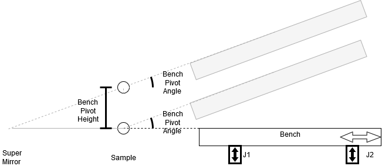

Configuration
An in-depth training course for writing a Reflectometry Configuration can be found here
The reflectometry configuration describes the geometry of the beamline and is read by the reflectometry IOC on startup. The config file is written in python and lives in <config area>/refl/config.py.
This file needs to import relevant classes and methods used for constructing the configuration via the line from ReflectometryServer import *. It should implement a get_beamline method, which takes a single macros argument, and returns an object of type Beamline.
Reference Manual
This section contains an overview of the available building blocks in the form of classes and helper methods, which are used to construct the beamline model.
Beamline Constants
These are fixed values which are exposed by the IOC as PVs of the form <PREFIX>:REFL:CONST:<NAME>, but cannot be changed at runtime. They follow a naming convention so that they can be read automatically by the shared reflectometry scripting library. The default set of constants the configuration has to define consists of:
S1_Z: Z coordinate of Slit 1S2_Z: Z coordinate of Slit 2S3_Z: Z coordinate of Slit 3S4_Z: Z coordinate of Slit 4SM_Z: Z coordinate of the supermirrorSAMPLE_Z: Z coordinate of the sample pointPD_Z: Z coordinate of the point detectorS3_MAX: Maximum vertical gap for S3S4_MAX: Maximum vertical gap for S4THETA: Maximum Theta angleNATURAL_ANGLE: Natural angle of the beam as it enters the blockhouseHAS_HEIGHT2: Whether the sample stack has a second height stage (True/Falseonly)
Also for the OPI we need constants:
OPI: Value is the directory names in which the OPI link panels are stored. E.g. on CRISP this is set to CRISP and the panels are in<GUI OPIs>\resources\reflectometry\crisp. This allows for different instruments and configs to have different front panels.
Arguments
Required:
name: The name of the constant (and it’s PV)value: The value it should havedescription: A helpful text description
Example:
BeamlineConstant("MAX_THETA", 1.8, "Maximum Theta value")
Components
Components are the central building blocks of the configuration. Each of them represents a node of interaction with the beam on the instrument (either passively tracking or actively affecting it). They are also the connective middle layer element between the user-facing beamline parameters and the composite drivers that talk to low level motors.
Types of Component
Component: Component that manages the linear displacement between the incoming beam and the component without affecting the beam (e.g. a slit)TiltingComponent: Component manages the angle and distance between the incoming beam and the component without affecting the beam. This allows the component to stay perpendicular to the beam as well as centred (e.g. point detector on SURF/CRISP)ReflectingComponent: Component manages the angle and distance between the incoming beam and the component, outgoing beam is reflected from this angle (assumes infinitely long reflector at angle and distance from the incoming beam) (e.g. supermirror); If the component is out of the beam it no longer reflectsBenchComponent: Component for a reflectometry bench. The bench has an angle and height of the position which it pivots about, usually the sample, and a seesaw, which is a value added and subtracted from its two jacks. The seesaw axis must always be autosaved because it can not be worked out independently of the angle. The bench is also capable of moving along the beam so that the bench appears to move around an arc centred at the bench pivot (sample position). The usual configuration is that the super mirror tips and this raises the height of the bench pivot and also changes the angle of it; theta just changes the angle of the pivot; see diagram below. For an example of a bench in the configuration see this page

ThetaComponent: Component manages the angle between the incoming beam and the outgoing beam at the sample position.The readback calculates the angle to the theoretical beam intercept of another component (ignoring any positional offset on that component). The component used is the first component on the list of the theta component (as defined in the configuration) that is in the beam. For example, a beamline may contain an analyser followed by a detector. If the analyser is in the beam, theta is the angle of the beam to the analyser, otherwise it is the angle to the detector.
The setpoint works in the same way as the ReflectingComponent except that it will update the beam path of components which define its angle even in disabled mode.
Arguments
Required:
name: Name of the componentsetup:Most components: The geometry setup for this component as an object of the form
PositionAndAngle(y, z, angle), where:y: y position of straight through beamz: z position of straight through beamangle: angle at which the linear axis moves
Bench Component: The bench setup of the form
BenchSetup(y, z, angle, jack_front_z, jack_rear_z, initial_table_angle, pivot_to_beam, min_angle_for_slide, max_angle_for_slide), where:y: y position of pivot of the bench of straight through beamz: z position of pivot of the bench of straight through beamangle: angle that bench pivot moves alongjack_front_z: distance to the front jack on the bench from the pivotjack_rear_z: distance to the rear jack on the bench from the pivotinitial_table_angle: initial table angle (the natural angle of the beam)pivot_to_beam: distance from the pivot of the bench to the beammin_angle_for_slide: is the angle below which the slide will not move any further. This does not include the initial table angle, (e.g. on POLREF it is 0)max_angle_for_slide: is the angle above which the slide will not move any further. This does not include the initial table angle, (e.g. on POLREF it is 4.8)
Theta Angle to/of Special Method
Once the component is defined that the theta should measure its angle to then it must be set on the theta component with either:
add_angle_to(<component>): this add the component to a list of components. If it is the first enabled component in that list then theta will use the components position to determine the angle of theta.add_angle_of(<component>): this add the component to a list of components. If it is the first enabled component in that list then theta will use the components angle to determine the angle of theta.
Example
theta = add_component(ThetaComponent("theta_component", setup=PositionAndAngle(0.0, 50.0, 90.0))
detector = add_component(TiltingComponent("detector", setup=PositionAndAngle(0.0, 100.0, 90.0)))
theta.add_angle_to(detector)
This creates a theta component which points at the detector height.
See example for an example of the bench component with parameters
Beamline Parameters
These are the top-level parameters exposed as PVs of the form <PREFIX>:REFL:PARAM:<NAME>:<SUFFIX>, which the users can set via the reflectometry front panel or scripting.
Types of parameter
AxisParameter: A parameter which controls the value of this components axis. If the axis is:POSITION: The position relative to the beam along the linear movement axis (e.g. offset on slit 2
S2OFFSET). This is useful for scanning over this axis for alignmentANGLE: The angle of this component relative to the angle of the incoming beam (e.g. angle of the point detector
PDANGLE)TRANS: The translation position
LONG_AXIS: The movement of the component parallel to the beam
CHI: The chi rotation angle
PSI: The psi rotation angle
SEESAW: The seesaw of the component, used with the bench.
DISPLACEMENT_HEIGHT: The height of the component relative to gravity. Cannot be set by the user directly, rather this is exposing positions computed by the reflectometry server based on the current beam path
DISPLACEMENT_ANGLE: The angle of the component relative to gravity. Cannot be set by the user directly, rather this is exposing positions computed by the reflectometry server based on the current beam path
InBeamParameter: A multi-state parameter which says whether this component is currently in the beam and tracking, or in parked state and not trackingDirectParameter: A non-tracking parameter (i.e. the value is independent of the current beam path). This currently does not require aComponentbut is instead directly passed aPVWrapperthrough which it talks to the motors.SlitGapParameter: A specific type ofDirectParameterdescribing slit gaps (functionally the same)
EnumParameter: A parameter which can take multiple values; the value is set as read back on move.VirtualParameter: A parameter that is not actually tied to a motor and does not have any component associated with it. Values passed to this parameter is used as an engineer correction at run time.
Arguments
Required:
name: name of the parametercomponent(only forAxisParameterandInBeamParameter): The component this parameter is foraxis(only forAxisParameter): The axis the parameter points tooptions(only forEnumParameter): A list of options that the parameter can take, e.g.["opt1", "opt2"]
Optional:
description: A description of this parameter (Default: use parametername)autosave: Whether the parameter should be autosaved to file (meaning that on IOC start up, the last known setpoint is re-applied, rather than inferred from a motor position). If multiple parameters depend on a single motor axis (e.g.ThetaandPDOffsetare inferred from point detector height), all but one of them should be autosaved in order to not lose information on the constituent parts of the axis value on restart. It should also be autosaved if a parameter can be parked out of the beam. (Default:False)rbv_to_sp_tolerance: The maximum difference between parameter readback and setpoint values at which it is still considered by the IOC to have arrived at its setpoint. (Default:0.002)custom_function: A python function that will be run when the parameter is moved to (either as part of a move all, as an individual parameter move or because it is in a mode where another parameter is set). This can be used to set other things in the system that depend on certain parameters, for example INTER uses it to set the wiring table when the point detector is put into and taken out of the beam. The arguments passed are the new value of the setpoint and the original value of the setpoint. To make it future compatible it should also except*argsand**kwargs. If the function returns a string it will be printed to the log.characteristic_value(only for axis parameters): This allow a characteristic value from a PV to be displayed next to this parameter. The value for this is the PV name without instrument extension, e.g.MOT:MTR0101. These are often used to display raw motor values next to positions relative to the beam.sp_mirrors_rbv(only for axis parameters): When set to True the setpoint will take its value from the readback value on any move (either because of a move beamline or because it is in the mode). For example the long axis on INTER moves sometimes but we don’t want to move the motor back instead we want to correct the detector height.
Example
# Parameter relative to the beam path
AxisParameter("SM_angle", ChangeAxis.ANGLE, supermirror_component)
Point a parameter at the super mirror components angle. Call the parameter SM_ANGLE, resulting in the PV <INSTRUMENT PREFIX>REFL:PARAM:SM_ANGLE and related PVs, e.g. :SP to set and move to the value.
# Parameter that is not associated with any component
VirtualParameter("HEIGHT", "mm")
Creates a parameter called HEIGHT and has “mm” as a unit of distance.
# Parameter that directly wraps a motor value
DirectParameter("sample_trans", MotorPVWrapper("MOT:MTR0305"))
Create a parameter called SAMPLE_TRANS that sets the motor 0305.
def change_dae_tables(point_detector_in_beam, last_point_detector_in_beam):
"""
Change the dae tables. In beam use the point detector tables, out of the beam use multi detector.
Args:
point_detector_in_beam: True point detector is in the beam; False otherwise
last_point_detector_in_beam: Original value before the parameter set
Return:
message to let the user know tables were changed
"""
from genie_python import genie as g
g.set_instrument(None, import_instrument_init=False)
tables = {True: {"wiring": "wiring_pd.dat",
"spectra": "spectra_pd.dat",
"detector": "detector_pd.dat"},
False: {"wiring": "wiring_multi.dat",
"spectra": "spectra_multi.dat",
"detector": "detector_multi.dat"}}
if point_detector_in_beam != last_point_detector_in_beam:
g.change_tables(**tables[point_detector_in_beam])
return "DAE tables set"
return None
...
add_parameter(InBeamParameter("PDINBEAM", comp, autosave=False, custom_function=change_dae_tables), modes=all_modes)
# sp mirrors rbv
add_parameter(AxisParameter("LONG", comp, CHangeAxis.LONG, sp_mirrors_rbv=True), modes=all_modes)
(Note: all_modes will have been manually defined earlier in the example file as a list of the available modes and is not an in-built value.)
Here when the point detector goes into or comes out of the beam the DAE tables are changed to be the correct tables.
Composite Drivers
These objects link the middle-layer component model to low-level motors.
Types of Driver
IocDriver: The driver for a single axis. This includes moving to a parked value if the component is out of the beam.
Arguments
Required:
component: The source componentcomponent_axis: the component axis to usemotor_axis: The physical motor axis as aPVWrapperobject (see below)
Optional:
synchronised: Whether this driver should be able to alter axis velocity when multiple axes are being moved (used for synchronised beamline movement) (Default:True)engineering_correction: any corrections that should be applied to the motor position (Default:None)out_of_beam_positions: A list of possible parked positions for this axis (Default:None). NB if the axis can be parked then any associated parameter will need to be autosaved.pv_wrapper_for_parameter: change the PV wrapper based on the value of a parameter. This needs aPVWrapperForParameter(parameter, value_wrapper_map)whereparameter: is the beamline parameter that the swap is based onvalue_wrapper_map: is a dictionary of the value and the wrapper to use. If the parameter is at a value not in this list the original wrapper is used.
Example
# linear and angular drivers for supermirror with parked position
IocDriver(sm_component, ChangeAxis.POSITION, MotorPVWrapper("MOT:MTR0101"))
IocDriver(sm_component, ChangeAxis.ANGLE, MotorPVWrapper("MOT:MTR0102"))
# with parked position
sm_out_pos = OutOfBeamPosition(-20)
IODriver(sm_component, ChangeAxis.POSITION, MotorPVWrapper("MOT:MTR0101"), out_of_beam_positions=[sm_out_pos])
# With wrapper based on parameter
IocDriver(s3_comp, ChangeAxis.POSITION, JawsCentrePVWrapper("MOT:JAWS3", is_vertical=True),
pv_wrapper_for_parameter=PVWrapperForParameter(s3_params["block"], {"South": MotorPVWrapper("MOT:JAWS3:JS:MTR")}))
PV Wrappers
Wrappers around lower level motors to read, monitor and cache relevant PV values (such as SP/RBV positions, or velocity related fields for synchronising moves).
Types of PV Wrapper
MotorPVWrapper: Wrapper around a standard motor PVJawsGapPVWrapper: Wrapper around a Jaws Gap PVJawsCentrePVWrapper: Wrapper around a Jaws Centre PV. NOTE: this can be used for a slit without a height stage
Arguments
Required:
base_pv: The base PV of the axis being driven
Optional:
min_velocity_scale_factor: used to compute a minimum motor velocity in case none is set viaVBASon the underlying axis. Having a minimum velocity avoids motor stalling. The minimum velocity will be equal toVMAX / min_velocity_scale_factor. (Default: 100 - i.e. default minimum velocityVMAX/100)
Example:
# Drive Axis 0101
MotorPVWrapper("MOT:MTR0101")
# Drive Axis JAWS1:HGAP
SlitGapPVWrapper("JAWS1", is_vertical=False)
# Drive Axis JAWS1:VCENT
SlitCentrePVWrapper("JAWS1", is_vertical=True)
Modes of Operation
Modes allow users to switch between different experimental setups more easily. They take the following arguments:
name: The name of the mode (e.g.NR,Liquid)beamline_parameters_to_calculate: The list of parameters that should automatically track the beam path when this mode is activesp_inits: A dictionary ofparameter:valuepairs to be applied when entering this mode (Default: empty)is_disabled: denotes that this is a special “disabled” mode, which means all beam tracking is disabled. This is useful for aligning individual parameters in isolation. (Default: False)
Example:
pnr_params = [...] # A list of all parameters relevant to PNR mode
pnr_inits = {"SM_inbeam": True}
BeamlineMode("Polarised NR", pnr_params, sp_inits=pnr_inits, is_disabled=False)
Footprint Calculator
The footprint calculator provides values for beam footprint and resolution based on the current slit gaps / theta, and exposes them to the front panel and scripting via PVs. It is instantiated by the beamline object if a FootprintSetup argument is passed, which defines relevant dimensions on the beamline.
The footprint setup takes the following arguments:
pos_s1: Z coordinate of slit 1pos_s2: Z coordinate of slit 2pos_s3: Z coordinate of slit 3pos_s4: Z coordinate of slit 4pos_sample: Z coordinate of the samples1vg: The verticalSlitGapParameterfor Slit 1s2vg: The verticalSlitGapParameterfor Slit 2s3vg: The verticalSlitGapParameterfor Slit 3s4vg: The verticalSlitGapParameterfor Slit 4theta: The ThetaAngleParameterlambda_min: The minimum lambda for this beamlinelambda_max: The maximum lambda for this beamline
Example
# All of these arguments should already have been defined elsewhere in the config:
footprint_setup = FootprintSetup(z_s1, z_s2, z_s3, z_s4, z_sample, s1vg, s2vg, s3vg, s4vg, theta, lambda_min, lambda_max)
Beamline
The top-level Beamline object is what is returned to the reflectometry IOC from reading the configuration and it encompasses everything else created in there.
The beamline object is assembled automatically by the helper functions detailed below.
Helper functions
The reflectometry server provides a set of helper functions to aid writing valid configuration files by automatically building up the top-level beamline object when any of the parts of it mentioned above are created.
Important note: Elements added via the helper methods will appear in the beamline in the order in which they appear in the configuration! e.g.
add_parameter(AxisParameter("PD_HEIGHT", ChangeAxis.ANGLE, pd_component))
add_parameter(AxisParameter("THETA", ChangeAxis.ANGLE, theta_component))
This would mean that, if both are changed at the time of a beamline move, the point detector height would be processed before theta, i.e. s3_height would move to the height value that is relative to the beam prior to the move theta value, and therefore the wrong place. Make sure you add elements in the order in which they appear along the beam.
The following methods are provided:
add_beam_start
Adds the beam start node.
Required arguments:
beam_start: The beam start node asPositionAndAngle
add_mode
Adds a new mode of operation to the list of all modes.
Required arguments:
name: The name of the mode
Optional arguments:
is_disabled: Whether this mode is “disabled mode” (Default:False)
add_constant
Adds a new beamline constant to the list of all constants.
Required arguments:
constant: TheBeamlineConstantto add
add_component
Adds a new component to the list of all components.
Required arguments:
component: TheComponentto add
Optional arguments:
marker: lets you insert this component in the position of the given marker instead of at the end of the list.
add_component_marker
Adds a new marker which can later be replaced by a component. This lets you define components in a different order to their order inside the beamline object. (see theta component in config below for example)
add_parameter
Adds a new parameter to the list of all parameters.
Required arguments:
parameter: TheBeamlineParameterto add
Optional arguments:
modes: A list ofBeamlineModes this parameter should be added to (default:None), by variable name.mode_inits: a list of mode init values for this parameter as a list of tuples (BeamlineMode, value) (default:None)marker: lets you insert this component in the position of the given marker instead of at the end of the list (default:None)
add_parameter_marker
Adds a new marker which can later be replaced by a parameter. This lets you define parameters in a different order to their order inside the beamline object. (see theta parameter in config below for example)
add_driver
Adds a new composite driver to the list of all drivers.
Required arguments:
driver: TheIocDriverto add
Optional arguments:
marker: lets you insert this driver in the position of the given marker instead of at the end of the list.
add_driver_marker
Adds a new marker which can later be replaced by a driver. This lets you define drivers in a different order to their order inside the beamline object.
add_slit_parameters
Add jaws-specific parameters and related drivers for a given jawset, i.e. horizontal and vertical gaps and centres.
Required arguments:
slit_number: The number of the jawset for which to add the parameters; this is the suffix of the JAW so can be1aif the jaw pv is `JAWS1A
Optional arguments:
rbv_to_sp_tolerance: Tolerance to set in the parameters, shows an alarm if readback value is not within this tolerance of the setpointmodes: A list ofBeamlineModes these parameters should be added to (default:None)mode_inits: a list of mode init values for these parameters as a list of tuples (BeamlineMode, value) (default:None)exclude: Do not create parameters for the given individual axes or blades; each must be one ofVG,VC,HG,HC,N,S,E,W(default:None)include_centres: Whether parameters for centres should be created or gaps only (default:False)beam_blocker: string containing code for beam blocker config,N,S,E,Wfor each blade which blocks the beam. See Reflectometry Beam Blocker
as_mode_correction
Helper method for you define a constant correction to be applied for specific modes only.
Required arguments:
correction: The constant offset to apply as a correction, e.g.-1.5modes: A list of names for modes for which this correction should apply, e.g.["PNR", "PA"]
Optional arguments:
default: The correction to apply for modes not in the list formodes(defaults to0.0)
get_configured_beamline
Returns the whole configured beamline object constructed from the parts added via the above helper methods
optional_is_set:
Checks whether a specific optional flag is set via one of the provided IOC macros. This allows you to dynamically change parts of the beamline configuration via macro rather than having to go and edit the configuration file itself.
Required arguments:
optional_id: The id of the macro (should be numeric between 1 - 4)macros: a dictionary of all IOC macros (should be the parameter you pass intoget_beamlineat the top)
Example Configuration
Following is a example of a typical beamline configuration:
from ReflectometryServer import *
def get_beamline():
"""
Returns: The beamline object
"""
# FIXED BEAMLINE VALUES
lambda_min = 1.4
lambda_max = 6.5
add_constant(BeamlineConstant("MAX_THETA", 1.8, "Maximum Theta value"))
add_constant(BeamlineConstant("NATURAL_ANGLE", 1.5, "Natural angle of the beam"))
add_constant(BeamlineConstant("HAS_HEIGHT2", False, "Second height stage present"))
# Modes
nr = add_mode("NR")
liquid = add_mode("Liquid")
disabled = add_mode("DISABLED", is_disabled=True)
# Slit 1
z_s1 = 0.0
add_constant(BeamlineConstant("S1_Z", z_s1, "Slit 1 z position"))
s1_comp = add_component(Component("s1", PositionAndAngle(0.0, z_s1, 90)))
add_parameter(AxisParameter("S1Offset", ChangeAxis.POSITION, s1_comp), modes=[nr, liquid])
add_driver(IocDriver(s1_comp, ChangeAxis.POSITION, MotorPVWrapper("MOT:MTR0301")))
s1_params = add_slit_parameters(1)
# Super Mirror
z_sm = 747.5
add_constant(BeamlineConstant("SM_Z", z_sm, "Super mirror z position"))
sm_comp = add_component(ReflectingComponent("sm", PositionAndAngle(0.0, z_sm, 90)))
add_parameter(InBeamParameter("SMInBeam", sm_comp, False),
modes=[nr, liquid], mode_inits=[(nr, False), (liquid, True)])
add_parameter(AxisParameter("SMOffset", ChangeAxis.POSITION, sm_comp), modes=[nr, liquid])
add_parameter(AxisParameter("SMAngle", ChangeAxis.ANGLE, sm_comp), modes=[nr, liquid])
add_driver(IocDriver(sm_comp, ChangeAxis.POSITION, MotorPVWrapper("MOT:MTR0406"),
out_of_beam_positions=[OutOfBeamPosition(-47.0)], synchronised=False))
add_driver(IocDriver(sm_comp, ChangeAxis.ANGLE, MotorPVWrapper("MOT:MTR0407"), synchronised=False))
# S2
z_s2 = z_sm + 831
add_constant(BeamlineConstant("S2_Z", z_s2, "Slit 2 z position"))
s2_comp = add_component(Component("s2", PositionAndAngle(0.0, z_s2, 90)))
add_parameter(AxisParameter("S2Offset", ChangeAxis.POSITION, s2_comp), modes=[nr, liquid])
add_driver(IocDriver(s2_comp, ChangeAxis.POSITION, MotorPVWrapper("MOT:MTR0302")))
s2_params = add_slit_parameters(2)
# Sample
z_sample = z_sm + 1088.3
add_constant(BeamlineConstant("SAMPLE_Z", z_sample, "Sample z position"), )
sample_comp = add_component(Component("sample", PositionAndAngle(0.0, z_sample, 90)))
add_parameter(AxisParameter("SampOffset", ChangeAxis.POSITION, sample_comp))
add_parameter(InBeamParameter("SampInBeam", sample_comp))
add_driver(IocDriver(sample_comp, ChangeAxis.POSITION, MotorPVWrapper("MOT:MTR0306"),
out_of_beam_positions=[OutOfBeamPosition(-10)]))
# Theta
theta_comp_marker = add_component_marker()
theta_param_marker = add_parameter_marker()
# S3 - example of using slit vertical centre as height
z_s3 = z_sm + 1399.30
add_constant(BeamlineConstant("S3_Z", z_s3, "Slit 3 z position"))
add_constant(BeamlineConstant("S3_MAX", 30, "Maximum S3 opening size"))
s3_comp = add_component(Component("s3", PositionAndAngle(0.0, z_s3, 90)))
add_parameter(AxisParameter("S3Offset", ChangeAxis.POSITION, s3_comp), modes=[nr, liquid])
add_driver(IocDriver(s3_comp, ChangeAxis.POSITION, JawsCentrePVWrapper("JAWS3", is_vertical=True), synchronised=False))
s3_params = add_slit_parameters(3, exclude="VC")
# S4
z_s4 = z_sm + 3114.3
add_constant(BeamlineConstant("S4_Z", z_s4, "Slit 4 z position"))
add_constant(BeamlineConstant("S4_MAX", 30, "Maximum S4 opening size"))
s4_comp = add_component(Component("vac_back", PositionAndAngle(0.0, z_s4, 90)))
add_parameter(AxisParameter("VBOffset", ChangeAxis.POSITION, s4_comp), modes=[nr, liquid])
add_driver(IocDriver(s4_comp, ChangeAxis.POSITION, MotorPVWrapper("MOT:MTR0304")))
s4_params = add_slit_parameters(4)
# point detector
z_point_detector = z_sm + 3505.8
add_constant(BeamlineConstant("PD_Z", z_point_detector, "Point detector z position"))
point_detector_comp = add_component(TiltingComponent("point_detector", PositionAndAngle(0.0, z_point_detector, 90)))
add_parameter(AxisParameter("PDOffset", ChangeAxis.POSITION, point_detector_comp), modes=[nr, liquid, disabled])
add_parameter(AxisParameter("PDAngle", ChangeAxis.ANGLE, point_detector_comp), modes=[nr, liquid, disabled])
add_parameter(InBeamParameter("PDInBeam", point_detector_comp))
add_driver(IocDriver(point_detector_comp, ChangeAxis.POSITION, MotorPVWrapper("MOT:MTR0401"),
out_of_beam_positions=[OutOfBeamPosition(285.0)]))
add_driver(IocDriver(point_detector_comp, ChangeAxis.ANGLE, MotorPVWrapper("MOT:MTR0402"), synchronised=False))
# multi detector
z_multi_detector = z_point_detector + 4007
add_constant(BeamlineConstant("MD_Z", z_multi_detector, "Multi-detector z position"))
multi_detector_comp = add_component(TiltingComponent("md", PositionAndAngle(0.0, z_multi_detector, 90)))
add_parameter(AxisParameter("MDOffset", ChangeAxis.POSITION, multi_detector_comp), modes=[nr, liquid, disabled])
add_parameter(AxisParameter("MDAngle", ChangeAxis.ANGLE, multi_detector_comp), modes=[nr, liquid, disabled])
add_parameter(InBeamParameter("MDInBeam", multi_detector_comp), modes=[nr, liquid, disabled])
add_driver(IocDriver(multi_detector_comp, ChangeAxis.POSITION, MotorPVWrapper("MOT:MTR0403"), synchronised=False,
out_of_beam_positions=[OutOfBeamPosition(98.71)]))
add_driver(IocDriver(multi_detector_comp, ChangeAxis.ANGLE, MotorPVWrapper("MOT:MTR0404"), synchronised=False))
# Perform marker replacements
theta_comp = add_component(ThetaComponent("ThetaComp", PositionAndAngle(0.0, z_sample, 90)),
marker=theta_comp_marker)
theta_comp.add_angle_to(point_detector_comp)
theta_comp.add_angle_to(multi_detector_comp])
theta_param_angle = add_parameter(AxisParameter("THETA", theta_comp, ChangeAxis.ANGLE, autosave=True), modes=[nr, liquid, disabled],
marker=theta_param_marker)
# Footprint calculator setup
add_footprint_setup(FootprintSetup(z_s1, z_s2, z_s3, z_s4, z_sample,
s1_params["VG"], s2_params["VG"], s3_params["VG"], s4_params["VG"],
theta_param_angle,
lambda_min, lambda_max))
add_beam_start(PositionAndAngle(0.0, 0.0, 0.0))
return get_configured_beamline()